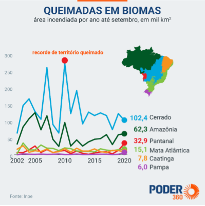

Biomas brasileiros afetados pelas queimadas
No Brasil existem seis tipos de bioma: Amazônia, Pantanal, Cerrado, Caatinga, Mata Atlântica e Pampa, sendo eles, uma grande fonte de biodiversidade e riquezas naturais, porém o aumento do números de queimadas os tem afetado por demasia.
Neste ano, o Pantanal teve o maior índice de queimadas, batendo recordes históricos desde a contagem destes dados. Já o Cerrado, sendo o segundo maior bioma brasileiro e responsável por 30% da biodiversidade do Brasil, teve uma
crescente no número de queimadas e desmatamento devido ao aumento da estiagem, gerando um desequilíbrio da natureza, ameaçando o habitat dos animais e poluindo recursos hídricos.
Segundo os dados do INPE, até no início de outubro o órgão registrou 175.671 focos de queimadas em todos os biomas brasileiros. Este índice é o maior desde 2010, quando foram notificados 257.100 focos no mesmo período.
Veja o mapa dos biomas brasileiros e seus atuais focos de queimadas abaixo.
Para visualizar as legendas e os filtros, basta clicar no ícone .

Os biomas mais afetados pelas queimadas são: Amazônia (80.221 focos), Cerrado (53.134 focos), Pantanal (19.215 focos) e Mata Atlântica (15.295 focos).
A proporção das queimadas é tão grande que somente a Amazônia e o Cerrado representam 75,9% das queimadas monitoradas pelo INPE. A Caatinga apresentou uma redução de queimadas, foi 38% a menos em comparação ao ano anterior.
O Sudeste também registrou recordes de queimadas , entre janeiro e no início de setembro foi registrado um aumento de 53% no número de queimadas no estado de São Paulo, são 2,744 focos de incêndio registrados. Em Ribeirão
Preto foram registrados 12,9 mil hectares consumido pelo fogo entre maio e setembro deste ano. O gráfico a seguir mostra o estado atual de queimadas dos biomas Brasileiros:
Veja Agora o que trazemos sobre cada um dos biomas.
- Amazônia
A Amazônia teve a maior área queimada desde 2010, onde a taxa já foi o dobro em 2007, quando foram queimados 115.883 km2.
Fauna afetada: abelhas, gafanhotos, sapos, tatus, arara, porco espinho, tamanduá, boto cor-de-rosa, caxipu-preto, papagaio-de-peito-roxo, dentre outros.
Flora afetada: Andiroba, aroeira, o ipê, a figueira, a palmeira, entre outras.
Pantanal O Pantanal teve o recorde no número de queimadas desde 2002. As regiões mais afetadas do Pantanal são nos estados do Mato Grosso e Mato Grosso do sul, onde os animais muitas das vezes vão para a zona urbana para
fugir das queimadas ou acabam morrendo carbonizados.
Fauna afetada: onça pintada, arara-azul, jacu-de-barriga-castanha, cervo-do-pantanal, ariranha, anta, capivara, gato-maracajá, cachorro-do-mato, quati, porco do mato, Jacaré-de-papo-amarelo , jacaré-do-pantanal, sucuri-amarela,
tartaruga-do-pantanal, dentre outros.
Flora afetada: figueiras, ingazeiros, aguapé, erva-de-santa-luzia, utriculária e cabomba
Cerrado O Cerrado teve uma queda de 17% no número de queimadas, onde o pico foi em 2010, com 272.794 km² incendiados. As regiões mais afetadas são os estados de Goiás e Mato Grosso.
Fauna afetada: lobo guará, onça parda, anta, ariranha, gato-maracajá, jaguatirica, tamanduá bandeira, veado-mateiro, seriema, galito, pato-mergulhão, soldadinho, pica-pau-do-campo, gavião-carijó, dentre outros.
Flora afetada: ipê-amarelo, babaçu, buriti, calunga, guariroba, macaúba, araçá, jabuticaba, jatobá, pequi, ingá, aroeira-branca, angico, cedro-rosa, quaresmeira roxa, assa-peixe, barbatimão, dentre outras.
Caatinga A Caatinga registrou queda anual de 38% no número de queimadas e o estado mais afetado é o de Pernambuco.
Fauna afetada: onça parda, tatu bola, cutia, gambá, preá, veado-catingueiro, tatu-peba, gatos selvagens, asa branca, ararinha azul, tamanduá-bandeira, tatu-canastra, cachorro do mato, águia-cinzenta, lobo-guará, entre outros.
Flora afetada: angico, aroeira-vermelha, barriguda, bromélia, cacto, carnaúba, caroá, catingueira, cumaru, faveleira, ipê roxo, jericó, juazeiro, mandacaru, palma, quixaba, dentre outras.
Mata Atlântica A Mata Atlântica teve praticamente o mesmo tamanho de território queimado em 2019, mas mesmo assim, é o 3º pior resultado em 10 anos. Esse bioma é o com o maior número de espécies ameaçadas de extinção,
e o estado mais atingido é o Paraná.
Fauna afetada: Jacutinga, pica-pau-amarelo, bugio, tamanduá-bandeira, veado, gambá, cutia, tatu-canastra, mono-carvoeiro, arara-azul-pequena, lontra, quati, anta, onça-pintada, jaguatirica, capivara, dentro outros.
Flora afetada: sapucaia, bromélias, begônias, orquídeas, ipê, palmeiras, quaresmeira, pau-brasil, cipós, briófitas, jacarandá, peroba, jambo, jequitibá-rosa, imbaúba, cedro, tapiriria, andira, ananás e figueiras.
Pampa Na Pampa, a área queimada nos nove primeiros meses deste ano é a maior já registrada desde 2002. Até setembro, a área devastada pelo fogo foi cinco vezes a registrada no mesmo período de 2019 e totalizou 6.044 km².
Ela é localizada apenas no estado do Rio Grande do Sul.
Fauna afetada: jaguatirica, onça-pintada, jaguatirica, mono-carvoeiro, macaco-prego, guariba, mico-leão-dourado, sagui, preguiça-de-coleira, caxinguelê, tamanduá, jacu, macuco, jacutinga, ema, perdigão, perdiz, quero-quero, tiê-sangue,
araponga, sanhaço, caminheiro-de-espora, joão-de-barro, sabiá-do-campo, pica-pau do campo, beija-flor-de-barba-azul, veado-campeiro, graxaim, zorrilho, furão, tatu-mulita, preá, tuco-tucos, sapinho-de-barriga-vermelha, tucanos,
saíras, gaturamos, cervo-do-pantanal, caboclinho-de-barriga-verde, picapauzinho-chorão.
Flora afetada: louro-pardo, cedro, cabreúva, canjerana, guajuvira, guatambu, grápia, campim-forquilha, grama-tapete, flechilhas, canafístula, brabas-de-bode, pau-de-leite, unha-de-gato, bracatinga, cabelos de-porco, angico-vermelho,
caroba, babosa-do-campo, amendoim-nativo, trevo-nativo, cactáceas, timbaúva, araucárias, algarrobo, nhandavaí, palmeira anã.